Selamat Datang ke
Pejabat Daerah Ranau
Kami menyampaikan perkhidmatan pentadbiran daerah yang telus dan mesra rakyat kepada penduduk Ranau, di kaki Gunung Kinabalu.

Tatal untuk terokaiInfo Korporat
Mengenai jabatan, struktur organisasi dan hebahan integriti
Profil Daerah
Maklumat mengenai Daerah Ranau
Perkhidmatan Online
Perkhidmatan dan permohonan dalam talian
Galeri & Pautan
Gambar, video dan pautan berguna
Hebahan & Berita
Notis rasmi, pengumuman dan perkembangan terkini dari Pejabat Daerah Ranau.
Hebahan
Berita Terkini
-
12Sep
Taklimat Integriti Jabatan 2026
Sesi taklimat integriti tahunan diadakan untuk semua kakitangan pejabat.
-
28Ogo
Promosi Pelancongan Daerah Ranau
Kerjasama dengan agensi pelancongan bagi mempromosikan tarikan sekitar Kinabalu.
-
15Ogo
Pembaharuan Lesen Berniaga Tahun 2026
Peniaga diingatkan untuk memperbaharui lesen sebelum tarikh akhir ditetapkan.